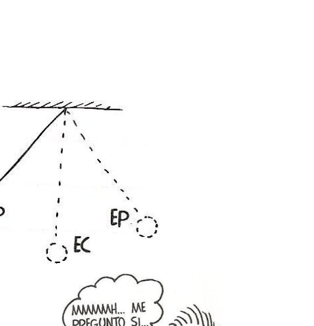
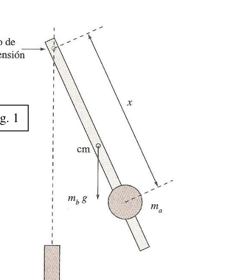
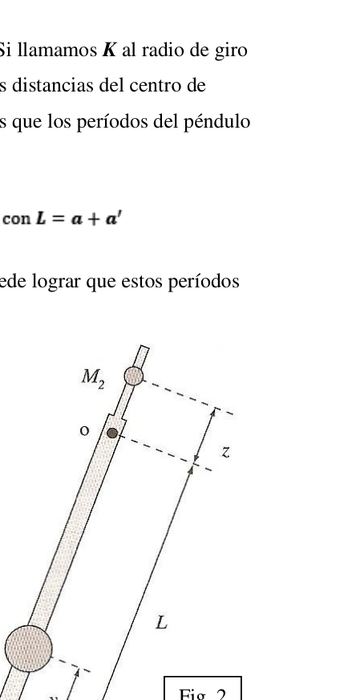
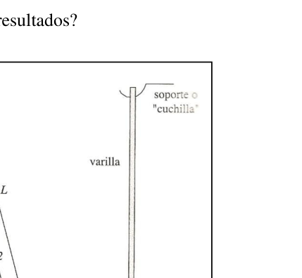

Pendulo no-intuitivo, Kater y de varillas
- Río Segundo, Córdoba. Azul. Un péndulo es un sistema físico ideal constituido por un hilo flexible, inextensible (de masa despreciable), sostenido por su extremo superior de un punto fijo, con una masa puntual en su extremo inferior que oscila libremente. Si el movimiento de la masa se mantiene en un plano, se dice que es un péndulo plano; en caso contrario, se dice que es un péndulo esférico. En esta prueba experimental utilizaremos distintos tipos de péndulos y para el análisis de la experiencia: sensores, una PC y una barra de metal.
I. PÉNDULO NO-INTUITIVO Introducción: el “péndulo no-intuitivo” (Fig. 1), consiste de una barra de masa mb y longitud Lb ≈ 50 cm suspendida de uno de sus extremos. La barra tiene adosada una masa ma a una distancia x del punto de suspensión. Esta masa puede tener un agujero por donde pase la barra y puede fijarse a la misma con un tornillo. El objetivo de este experimento es medir la variación del período T de este sistema para pequeñas amplitudes (θmax ≤ 10°) como función de la posición x de la masa ma.
Desarrollo Equipo: una barra metálica (o de madera) de 50 cm de largo. Una barra extra que puede fijarse a la barra. Un sensor conectado a una PC. i. Armar el dispositivo como se muestra en la Fig. 1. ii. Determine el período T0 de la barra, sin la masa ma. iii. Con la masa ma colocada, determine el período T para distintas posiciones de la masa a lo largo de la barra (mínimo 10
Fig. 1
valores de x, distribuidos lo más uniformemente posible sobre la longitud de la barra). iv. Represente, en un mismo gráfico, los valores experimentales de T en función de x y la función teórica dada por la ecuación (Ec. 1) usando los valores medidos de mb, ma y Lb. ¿Qué conclusiones puede obtener de este estudio?
II. PÉNDULO REVERSIBLE DE KATER
Introducción: existen varias realizaciones de este “péndulo reversible”, inventado por Henry
Kater. Todas ellas están basadas en un péndulo físico, conformado típicamente por una barra,
que puede oscilar alrededor de dos puntos de suspensión distintos O y O’, como se muestra en
la Fig. 2. Lo que se busca es una distribución de masa para la cual los períodos de oscilación
respecto de los puntos de suspensión O y O’ sean iguales. Esto se consigue ajustando la
posición de las masas M1 y M2, lo que cambia el momento de inercia del péndulo respecto al eje
de giro.
La distancia entre los puntos de suspensión es fija y conocida, L. Si llamamos K al radio de giro
del péndulo respecto de su centro de masa, y designamos a y a’ las distancias del centro de
masa a los puntos de suspensión O y O’, respectivamente, tenemos que los períodos del péndulo
respecto de estos dos puntos de suspensión son, respectivamente:
Si variando la distribución de masas (ubicadas de M1 y M2), se puede lograr que estos períodos se igualen, entonces, demuestre que se cumple:
Desarrollo
Equipo: una barra de metal (o madera) para construir una
versión simplificada del péndulo de Kater. Un sensor
conectado a una PC.
i.
Armar el dispositivo como muestra la Fig. 2.
ii.
Determine el valor de g con la menor
incertidumbre que sea posible.
Fig. 2
iii. Un procedimiento para lograr la igualdad de los períodos y poder usar la Ec. 2 para obtener g, consiste en medir T y T’ en función de y (la posición de la masa mayor). El punto y* donde las curvas T(y) y T’(y) se corten determina el valor óptimo de y. Luego, moviendo la masa mayor a esta posición óptima, se miden otra vez T y T’, pero ahora en función de z (la posición de la masa menor). Se repite el procedimiento de búsqueda de la convergencia de los dos períodos T y T’, lo que puede hacerse mediante un gráfico de T y T’ en función de z, de donde se determina z* (el valor donde estas curvas se intersectan). La masa M2 se mueve a la posición z* y se repite el procedimiento hasta lograr que ambos períodos T y T’ sean iguales, dentro de los errores de medición. Los períodos se pueden medir con bastante precisión usando el sensor conectado a la computadora. iv. Represente gráficamente T y T’ en función de y (la posición mayor de la masa mayor). Determine el valor de y* para el que T ≈ T’. v. Para el valor y* hallado en el ítem anterior, mida T y T’, ambos en función de z (la posición de la masa menor). Represente gráficamente T(z) y T’(z) y determine el valor de z* para el que T ≈ T’. vi. Del gráfico anterior obtenga el mejor valor del período T (que cumple T ≈ T’) y estime la incertidumbre de esta determinación. vii. Determine el valor de g usando la Ec. 2 y estime la incertidumbre de esta determinación.
III. PÉNDULO DE VARILLAS
Introducción: el dispositivo experimental para analizar un “péndulo de varillas” es similar al
ilustrado en la Fig. 3. Esta experiencia consiste en estudiar la variación del período de oscilación
de varias varillas en función de sus longitudes. Suponiendo que cada varilla tiene una longitud
total L, y está suspendida a una distancia δ (δ << L) de uno de sus extremos.
Se utilizarán 10 varillas de un material liviano, cuyas longitudes varían entre 10 y 120 cm. Para
todas las varillas se supone que la distancia δ del punto de suspensión a uno de los extremos es
la misma δ = 6 a 10 mm .
Desarrollo Equipo: un conjunto de varillas metálicas de sección uniforme, de longitudes entre 10 y 120 cm. Un sensor conectado a la computadora para medir tiempos. i. Empleando el dispositivo sugerido en la Fig. 3, analice la variación del período T para las distintas varillas disponibles. Represente T en función de L en escala lineal.
¿Es posible ajustar los resultados usando una relación funcional del tipo T = k . Ln? ¿Cuáles son los valores de k y n compatibles con los resultados? ii. Represente los resultados usando T2 en función de L. ¿Qué relación funcional sugiere esta representación para los resultados experimentales? iii. Use el gráfico de T2 en función de L y ajuste una línea recta a través de los datos. Determine los valores de g y δ que mejor ajusten los datos. ¿Cómo se comporta el valor de g obtenido en este experimento con los obtenidos con otros experimentos? iv.
Observación: el radio de curvatura de la “cuchilla” es mucho menor que el radio del agujero hecho en la varilla, y del cual cuelga, rcuchilla << ragujero. La “cuchilla” es una alambre rígido en forma de gancho.




Topic: Oscillations & Waves Metodi: Simple Harmonic Motion Analysis, Experimental Data Analysis, Curve Fitting Competenze: Physical Reasoning, Experimental Data Analysis Objects: Pendulum, Rod Fonte: Testo (PDF) — p.1
Pendeola non intuitiva, Kater e di bastone
- Rio Segundo, Córdoba. Blu. Un pendolo è un sistema fisico ideale costituito. per un filo flessibile, inestensibile (di massa sconsiderato), sostenuto dalla sua estremità superiore di un punto fisso, con una massa puntuale all’estremità inferiore che oscilla liberamente. Se il movimento di la massa si mantiene in un piano, si dice che è un un pendolo piano; altrimenti, si dice che è un pendolo sferico. In questo test sperimentale useremo diversi tipi di tipi di pendoli e per l’analisi dell’esperienza: sensori, un PC e una barra di metallo.
I. PENDILLO NON-INTUITIVO Introduzione: il pendolo non intuitivo (Fig. 1), consiste in una barra di massa mb e di lunghezza Lb ≈ 50 cm sospesa da una delle sue estremità. La barra ha un’inclosura massima a una Distanza x dal punto di sospensione. Questa massa può avere un buco dove passa la barra e si può fissare con uno schermo. L’obiettivo di questo esperimento è di misurare la variazione del periodo T di questo sistema per Le dimensioni di una massa di massa di massa di massa di massa di massa di massa di massa di massa di massa di massa di massa di massa di massa di massa di massa di massa di massa di massa di massa di massa di massa di massa di massa di massa di massa di massa di massa di massa di massa di massa di massa di massa di massa di massa di massa di massa di massa di massa di massa di massa di massa di massa di massa di massa di massa di massa di massa di massa di massa di massa di massa di massa di massa di massa di massa di massa di massa di massa di massa di massa di massa di massa di massa di massa di massa di massa di massa di massa di massa di massa di massa di massa di massa di massa di massa di massa di massa di massa di massa di massa di massa di massa di massa di massa di massa di massa di massa di massa di massa di massa di massa di massa di massa di massa di massa di massa di massa di massa di massa di massa di massa di massa di massa di massa di massa di massa di massa di massa di massa di massa di massa di massa di massa di
Sviluppo Apparecchiature: una barra metallica (o di legno) di 50 cm di diametro
- Molto lungo. Una barra extra che può essere fissata alla barra. Un sensore collegato a un PC. i. Armarsi il dispositivo come mostrato in la Fig. 1. ii. Determina il periodo T0 della barra, senza
- Ma’ massa. iii. Con la massa ma posizionata, determinare il Periodo T per diverse posizioni della massa lungo la barra (minimo 10
Fig. 1
Valori di x, distribuiti il più uniformemente possibile sulla lunghezza della barra). iv. Rappresenta, su un grafico stesso, i valori sperimentali di T in funzione di x e La funzione teorica data dall’equazione (Ec. 1) utilizzando i valori misurati di mb, ma y Lb. Quali conclusioni si possono trarre da questo studio?
II. PENDILLO RIVERSIbile di KATER Introduzione: esistono diverse realizzazioni di questo pendolo reversibile, inventato da Henry Kater. Tutte sono basate su un pendolo fisico, tipicamente formato da una barra, che può oscillare intorno a due punti di sospensione diversi O e O, come mostrato in la Fig. 2. Ciò che si cerca è una distribuzione di massa per la quale i periodi di oscillazione per quanto riguarda i punti di sospensione O e O sono uguali. Questo è ottenuto aggiustando la la posizione delle masse M1 e M2, che cambia il momento di inerzia del pendolo rispetto all’asse di giro. La distanza tra i punti di sospensione è fissa e nota, L. Se chiamiamo K al radio di rotazione Il pendolo rispetto al suo centro di massa, e designamo a e a le distanze dal centro di massare i punti di sospensione O e O, rispettivamente, abbiamo i periodi del pendolo per questi due punti di sospensione sono rispettivamente:
Se la distribuzione di massa (a destinazione di M1 e M2) varia, si può ottenere che questi periodi che siano uguali, allora dimostri che si è realizzato:
Sviluppo Equipaggiamento: una barra di metallo (o legno) per costruire una versione semplificata del pendolo di Kater. Un sensore . collegato a un PC. i. Armarsi il dispositivo come mostrato nella figura. 2. ii. Determina il valore di g con la minore l’incertezza che è possibile.
Fig. 2
iii. Un procedimento per ottenere la parità dei periodi e poter utilizzare l’Ec. 2 per per ottenere g, si misura T e T in funzione di y (la posizione della massa maggiore). Il punto e* dove le curve T(y) e T(y) vengono tagliate determina il valore ottimale di y. Poi, spostando la massa maggiore in questa posizione ottimale, si misurano di nuovo T e T, Ma ora in funzione di z (la posizione della massa minore). Si ripete il Il metodo di ricerca della convergenza dei due periodi T e T, che Si può fare con un grafico di T e T in funzione di z, da cui si determina z* (il valore in cui queste curve si intersecano). La massa M2 viene spostata alla posizione z* e la procedura viene ripetuta fino a che se i periodi T e T sono uguali, all’interno degli errori di misurazione. I I periodi possono essere misurati con abbastanza precisione usando il sensore collegato alla computer. iv. Rappresenta graficamente T e T in funzione di y (la posizione maggiore della massa maggiore). Determina il valore di y* per il quale T ≈ T. v. Per il valore y* trovato nell’oggetto precedente, misurare T e T, entrambi in funzione di z (la la posizione della massa minore). Rappresenta graficamente T(z) e T(z) e determina il valore di z* per il quale T ≈ T. vi. Dal grafico precedente si ottiene il miglior valore del periodo T (che soddisfa T ≈ T) e La Commissione ha adottato una decisione che non prevede che la Commissione non potrà adottare misure per la salvaguardia di tali diritti. 7°. Determina il valore di g usando l’Ec. 2 e valutare l’incertezza di questa determinazione.
III. PENDOLO DI VALLE Introduzione: il dispositivo sperimentale per analizzare un pendolo di bastone è simile a quello di illustrato in Fig. 3. Questa esperienza consiste nello studio della variazione del periodo di oscillazione di diverse bacche a seconda delle loro lunghezze. Supponendo che ogni bastone abbia una lunghezza L totale, e è sospesa a una distanza δ (δ << L) da una delle sue estremità. Usare 10 bastone di materiale leggero, le cui lunghezze variano da 10 a 120 cm. Per tutte le bacche si suppone che la distanza δ dal punto di sospensione ad una delle estremità sia lo stesso δ = 6 a 10 mm .
Sviluppo Equipaggiamento: un insieme di bastone metalliche di sezione uniforme, di lunghezza compresa tra 10 e 120 cm. Un sensore collegato al computer per misurare i tempi. i. Utilizzando il dispositivo suggerito nella figura. 3, analizza la variazione del periodo T per le diverse bacche disponibili. Rappresenta T in funzione di L su scala lineare.
È possibile regolare i risultati utilizzando un rapporto funzionale del tipo T = k? Ln? Quali sono i valori di k e n compatibili con i risultati? ii. Rappresenta i risultati usando T2 in funzione di L. Che rapporto funzionale suggerisce? Questa rappresentazione è per i risultati sperimentali? iii. Utilizzare il grafico di T2 in funzione di L e regolare una linea retta a attraverso i dati. Determina i valori di g e δ che meglio aggiustare i dati. Come si fa? comporta il valore di g ottenuto In questo esperimento con i ottenute con altri esperimenti? iv.
Nota: il raggio di curvatura della cucchiaio è molto inferiore al raggio del foro fatto sul bastone, e da cui si appende, rottura << buco. La cucchiaio è un filo rigido in forma di gancio.
Topic: Oscillations & Waves Metodi: Simple Harmonic Motion Analysis, Experimental Data Analysis, Curve Fitting Competenze: Physical Reasoning, Experimental Data Analysis Objects: Pendulum, Rod Fonte: Testo (PDF) — p.1
Non-intuitive pendulum, Kater and rods
- The second river, Cordoba. Blue, please. A pendulum is an ideal physical system constructed The use of a flexible, non-extensible (mass) thread The first is the “slow” and “despicable” a fixed point, with a point mass at its end lower, which oscillates freely. If the movement of The mass is kept in a plane, it’s said to be a a flat pendulum; otherwise, it is said to be a The spherical pendulum. In this experimental test we will use different For the purposes of analysis of experience: sensors, a PC and a metal bar.
I. It ‘s not an intuitive pencil . Introduction: the non-intuitive pendulum (Fig. 1) consists of a mass bar mb and length Lb ≈ 50 cm suspended from one of its ends. The bar has a mass ma to a distance x from the point of suspension. This mass may have a hole through which the bar passes and You can fix it with a screw. The aim of this experiment is to measure the variation in the T period of this system for small amplitudes (θmax ≤ 10°) as a function of the x position of the mass ma.
Development Equipment: a 50 cm metal (or wood) rod
- It’s a long one. An extra bar that can be attached to the bar. Un sensor connected to a PC. i. Arming the device as shown in The Fig. 1. ii. Determine the period T0 of the bar, without the I’m going to take a look. (iii) the following: With the mass ma placed, determine the period T for different positions in the mass along the bar (minimum 10
Fig. 1
values of x, distributed as evenly as possible over the length of the the bar). iv. It represents, on the same graph, the experimental values of T as a function of x and The theoretical function given by the equation (Ec. 1) using the measured values of mb, ma y Lb. What conclusions can you draw from this study?
II. The reverse of the cater . Introduction: There are several versions of this reversible pendulum invented by Henry I’m not going to lie. They’re all based on a physical pendulum, typically made up of a bar, which can oscillate around two different suspension points O and O, as shown in The Fig. 2. What we ‘re looking for is a mass distribution for which the oscillation periods for the suspension points O and O are equal. This is achieved by adjusting the The position of the masses M1 and M2 changes the moment of inertia of the pendulum with respect to the axis. I’m not going to say. The distance between the suspension points is fixed and known, L. If we call K to the radius of rotation We’re going to have to look at the pendulum relative to its center of mass, and we’re going to designate a and a the distances from the center of mass. mass to the suspension points O and O, respectively, we have the pendulum periods for these two suspension points are respectively:
If the mass distribution (location of M1 and M2) is varied, these periods can be achieved If they are equal, then prove that they are fulfilled:
Development Equipment: a metal (or wood) bar to build a A simplified version of the Kater pendulum. A sensor . connected to a PC. i. Arming the device as shown in Fig. 2. ii. Determine the value of g with the least Uncertainty as possible.
Fig. 2
(iii) the following: A procedure for achieving equal periods and to be able to use the EC. 2 for G, is measured by measuring T and T on the basis of y (the position of the larger mass). The point y* where the curves T(y) and T(y) are cut determines the optimal value of y. Then, moving the larger mass to this optimal position, T and T are measured again, But now it’s a function of z (the position of the lesser mass). Repeat the The method of finding the convergence of the two periods T and T, which can be done by a graph of T and T in terms of z, from which it is determined z* (the value where these curves intersect). The mass M2 is moved to position z* and the procedure is repeated until both periods T and T are equal, within the measurement errors. The The time period can be measured quite accurately using the sensor connected to the computer. iv. Graphically represent T and T as a function of y (the largest mass position (see section 4. Determine the value of y* for which T ≈ T. v. For the value y* found in the previous item, measure T and T, both as a function of z (the the position of the lower mass). Graphically represent T(z) and T(z) and determine the The value of z* for which T ≈ T. vi. From the above graph, get the best value for the period T (which is T ≈ T) and The Commission will take the view that the Commission is not in a position to take any further action. The following is the list of the countries of the European Union: Determine the value of g using the Ec. 2 and estimate the uncertainty of this The Commission is not prepared to accept the proposal.
The Commission shall adopt the following: The pencil is a pencil . Introduction: the experimental device for analyzing a rod pendulum is similar to the illustrated in Fig. 3. This experiment consists of studying the variation in the oscillation period of several rods according to their lengths. Assuming each rod has a length. total L, and is suspended at a distance δ (δ << L) from one of its ends. 10 rods of lightweight material shall be used, the length of which varies between 10 and 120 cm. For All rods are assumed to be the distance δ from the point of suspension to one of the ends is same δ = 6 to 10 mm .
Development Equipment: a set of metal rods of uniform section, of a length between 10 and 120 cm. A sensor connected to the computer to measure time. i. Using the device suggested in Fig. The Commission shall examine the changes in the period T for the different rods available. T is represented as a function of L on a linear scale.
Is it possible to adjust the results using a functional relation of type T = k ? Ln? What are the values of k and n compatible with the results? ii. It represents the results using T2 as a function of L. What functional relationship does it suggest? This representation is for the experimental results? (iii) the following: Use the T2 graph as a function From L and adjust a straight line to through the data. Determine the values of g and δ that are best They adjust the data. How did you know? It contains the value of g obtained In this experiment with the obtained from other experiments? iv.
Note: the radius of curvature of the knife is much smaller than the radius of the hole made of rod, and hanging from it, clamp << hole. The knife is a rigid wire in Hooked shape.
Topic: Oscillations & Waves Metodi: Simple Harmonic Motion Analysis, Experimental Data Analysis, Curve Fitting Competenze: Physical Reasoning, Experimental Data Analysis Objects: Pendulum, Rod Fonte: Testo (PDF) — p.1